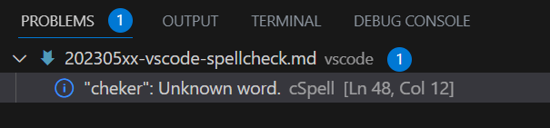
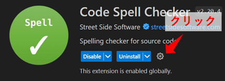
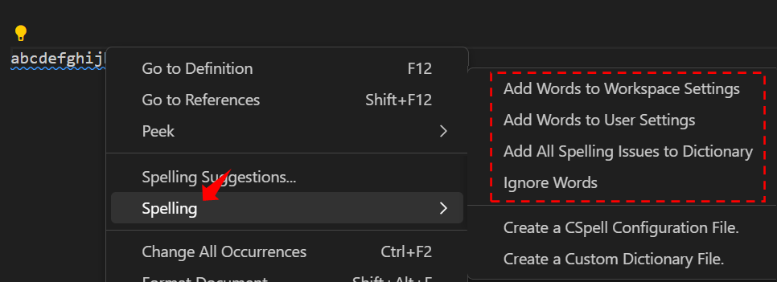

2023/05/12
VSCodeの拡張機能「Code Spell Checker」を使う
Code Spell Checkerを導入すると、英単語を随時チェックしてタイプミスを波線で表示してくれます。
また、キャメルケース(testWord)、スネークケース(test_word)にも対応しています。
ハンガリアン記法(testword)も設定すれば対応可能です。
Code Spell Checker - Visual Studio Marketplace
Extension for Visual Studio Code - Spelling checker for source code
使い方
インストールするだけでOKです。
スペルミスを以下のように波線で知らせてくれます。
問題タブにもスペルミスが表示されます。
また、正解候補の表示もしてくれます。
スペルミスの箇所にカーソルを置いてQuick Fixをクリック、もしくは電球マークをクリックします。
スペルチェックのルール設定
チェックルールの設定方法を紹介します。
自分用の設定をして使いやすくしたり、ルールをチームで共有したりすることができます。
設定ファイルでの設定
code spell checkerの設定ファイルは3つあります。
以下の数字は優先順位になっています。
- Workspace Folderに「cspell.json」を作成して設定
- VSCodeのWorkspace Settingsで設定
- VSCodeのUser Settingsで設定
1は自分でファイルを作成します。
2と3は自分でファイルを編集するほかに、VSCodeの設定画面もしくは右クリックメニューからも編集できます。
■cspell.jsonの作成
jsonファイル形式で、以下を記述していきます。
よく使いそうなものをリストアップしてみました。
| 設定 | 説明 |
|---|---|
| words zzzzz | "zzzzz"を辞書登録します、正解候補にも表示されます |
| ignoreWords zzzzz | "zzzzz"をスペルチェックからはずします |
| flagWords zzzzz | "zzzzz"を強制的にエラーにします |
| allowCompoundWords | ハンガリアン記法に対応します（"spellcheck"などのハンガリアン記法で記述した単語は通常エラーとなるが、エラーにならなくなる） |
| ignorePaths | チェック対象外にするファイルのパスを指定します |
| maxNumberOfProblems | スペルミスを表示する数のMAX値を指定します |
| minWordLength | スペルチェックする英単語の最低アルファベット数を指定します、デフォルトは4です |
例えば、以下のように使用します。
{
"words": [
"aiueo"
],
"ignoreWords": [
"testword"
],
"flagWords": [
"spellCheck"
],
"allowCompoundWords": true,
"ignorePaths": [
"xxxxxx/**"
],
"maxNumberOfProblems": 4,
"minWordLength": 7
}
その他の項目は下記を参照ください。
CSpell Configuration
Customizing CSpell - CSpell’s behavior can be controlled through a config file.
■VSCodeの設定画面から設定する
VSCode上の拡張機能の設定画面で、Workspace SettingsおよびUser Settingsの各設定が可能です。
上記のcspell.jsonで設定できる項目は、こちらでも設定可能です。
全部で59項目ありますが、通常使うのは上記で紹介した数項目くらいな気もします。
■右クリックのメニューから設定
エラーになった単語にカーソルを合わせて右クリックでメニューを開いて、単語の辞書登録をすることができます。
- Add Words to WorkSpace Settings / User Settings：
選択した単語をWorkSpaceまたはUserのSettings.jsonファイルに登録します。 - Add All Spelling Issues to Dictionary：
エラーになっている全単語をWorkSpaceのSettings.jsonファイルに登録します。 - Ignore Words：
選択した単語の無視設定をWorkSpaceまたはUserのSettings.jsonファイルに登録します。
また、ショートカットでも登録可能です。
- Mac: ⌘+. or Cmd+.
- Windows: Ctrl+.
（一応紹介）コード内での設定
「cSpell:xxxxx」をコメントアウトでコード内に記述することでルール設定ができます。
xxxxxのところに以下の設定欄の単語を入れます。
コード内に埋め込むのはイマイチかと思いますが。。
| 設定 | 説明 |
|---|---|
| disable | この記述以降のスペルチェック機能をOFFにします |
| enable | この記述以降のスペルチェック機能をONにします、disableとセットで使用します |
| disable-next-line | この記述の次のラインのスペルチェック機能をOFFにします |
| ignore zzzzz | "zzzzz"をスペルチェックからはずします |
| flag zzzzz | "zzzzz"を強制的にエラーにします |
| words zzzzz | "zzzzz"を辞書登録します、正解候補にも表示されます |
| enableCompoundWords | ハンガリアン記法に対応します |
例えば、以下のように使用します。
/* cSpell:disable */
spell chek ←これはチェックされない
/* cSpell:enable */
以上です。